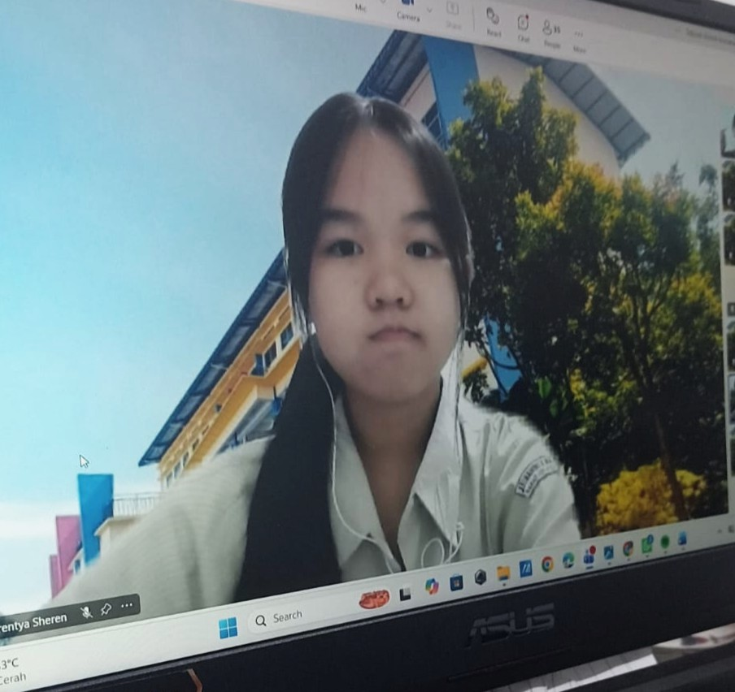

Forentya Sheren
X TKJ 1 - SMK Kristen Immanuel 1 Pontianak
Halo! Selamat datang di website profil saya. Nama saya Forentya Sheren, seorang siswi jurusan Teknik Komputer dan Jaringan (TKJ) di SMK Immanuel 1 Pontianak. Saya memiliki ketertarikan dalam bidang web technology. Saat ini, saya sedang belajar untuk membuat website html dengan cantik dan rapi.
Selain belajar, saya juga suka jalan-jalan dan mencoba pengalaman baru. Cita-cita saya adalah menjadi seorang pengusaha yang sukses. Melalui website ini, saya ingin memperkenalkan diri, membagikan informasi tentang diri saya, serta menunjukkan kemampuan yang sedang saya kembangkan.